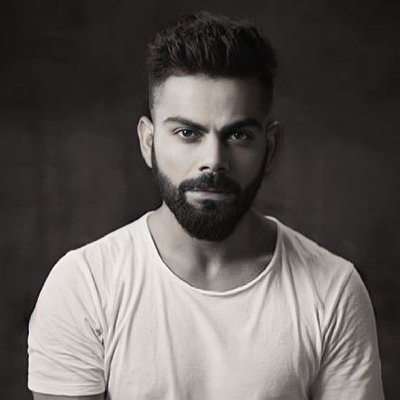

- November 5, 1988: Virat Kohli was born in Delhi, India, to Prem and Saroj Kohli.
- 1998: Joined the West Delhi Cricket Academy (WDCA) to train under coach Rajkumar Sharma.
- 2006: Played for Delhi in domestic cricket and gained attention by scoring consistently at the U-19 level.
- 2008: Led the Indian U-19 team to victory in the ICC U-19 Cricket World Cup in Malaysia.
- August 18, 2008: Made his ODI debut against Sri Lanka in Dambulla.
- 2009: Scored his maiden ODI century against Sri Lanka in Kolkata.
- 2011: Played a crucial role in India’s ICC Cricket World Cup win, scoring an important century in the group stage against Bangladesh.
- 2012: Became the fastest Indian to score 1,000 runs in ODIs and scored his famous 133* against Sri Lanka in Hobart during the CB Series.
- 2013: Named vice-captain of the Indian ODI team; became a key player in the Test format.
- 2014: Appointed India’s Test captain following MS Dhoni’s retirement from Test cricket.
- 2017: Took over as India’s captain across all formats after MS Dhoni stepped down from limited-overs captaincy.
- 2016: Scored 973 runs in a single IPL season, a record that stands to this day.
- 2016: Dominated T20 cricket with remarkable performances in the ICC World T20.
- 2017: India to the ICC Champions Trophy final..
- 2018: Became the fastest player to reach 10,000 ODI runs.
- Led India to their first-ever Test series win in Australia.
- 2019: Ranked as the world's No. 1 ODI batsman by the ICC and named in the ICC ODI and Test Teams of the Decade.
- 2021: Stepped down as T20I and Test captain; also relinquished the RCB captaincy in the IPL.
- December 11, 2017: Married Bollywood actress Anushka Sharma in a private ceremony in Italy
- January 11, 2021: Welcomed their daughter, Vamika.